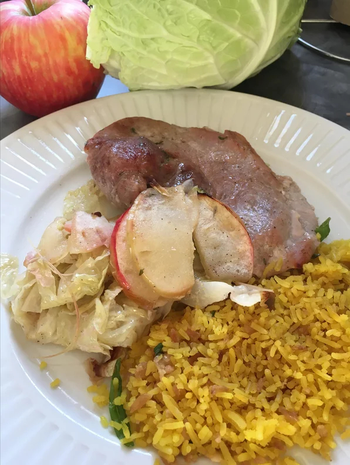

Dijon Pork with Apples and Cabbage

Description
A honey-mustard marinade gives pork a tangy-sweet punch.
Charred cabbage and apple make a crunchy side dish.
Ingredients
- ½ head green or red cabbage, cored and cut into 1/2-inch-thick wedges
- 2 large apples - cored and sliced into thin wedges
- 5 tablespoons extra-virgin olive oil divided
- 1 ½ teaspoons kosher salt, divided
- ½ teaspoon black pepper, divided
- 2 (16 ounce) pork tenderloins
- 1 tablespoon coarse-grain Dijon-style mustard
- 2 tablespoons white wine vinegar
- 2 teaspoons honey
- 1 teaspoon chopped fresh thyme leaves
- 1 tablespoon chopped fresh parsley (Optional)
Steps
- Preheat oven to 375 degrees F (190 degrees C). Place 1 rack in center position and another 4 inches from broiler. Spray a rimmed sheet pan with cooking spray.
- Toss together cabbage and apples with 3 tablespoons oil, 1/2 teaspoon salt, and 1/4 teaspoon pepper on prepared sheet pan and arrange in an even layer.
- Pat pork dry and season with remaining teaspoon salt and 1/4 teaspoon pepper. Whisk together remaining 2 tablespoons oil with mustard, vinegar, honey, and thyme in a small bowl. Spread over all sides of pork and set pork on top of cabbage and apples.
- Roast on center rack until an instant-read thermometer inserted into center of thickest part of each tenderloin registers 130 degrees F, about 25 minutes.
- Remove pan from oven and turn oven to broil. When broiler is hot, put pan on top rack and broil until pork has a golden-brown crust, thermometer registers 145 degrees F, and cabbage and apples have a light char, about 5 minutes.
Cover pan loosely with foil and let pork rest 10 minutes before slicing. Serve pork warm with cabbage and apples, sprinkled with parsley (if using).
Return to Home